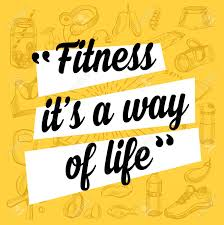
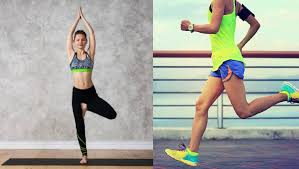

The long term effects of fitness
Friday October 2 2020 by Anna-Kay Graham
Taking part in routine exercise or training about three times a week for six weeks can contribute to adaptation of the body systems that are used or trained. This has the effect of increasing success in that type of exercise or sport and is also beneficial to general health and daily life.
In as little as two weeks, a reasonably well-conditioned athlete will see long-term cardiovascular benefits from exercising. In up to four weeks, individuals who are only starting to exercise can see results. These effects include: as your cardiovascular training improves, the heart and lungs become more powerful, decreased resting heart rate, which means that your heart does not have to beat to pump blood as much, improved ability to draw in deeper and longer breaths, and take fewer breaths, reduced risk.
Yoga vs Cardio for weight loss
Friday October 2 2020 by Anna-Kay Graham
Yoga, for most of us, sounds like a lot of hard work with delayed outcomes. And we see immediate gratification when it comes to cardio, but the effects are not quite long-lasting, because if you quit cardio, you end up gaining weight.
So then, what is the best way to lose weight and keep it off? Did you know that according to the European Journal of Preventive Cardiology, yoga can be as good an exercise as cycling, swimming, and brisk walking?There are many techniques in yoga that are very useful for those who want to lose weight, minimize fat around the tummy, or want to burn calories, such as kapal bhati, which is a breathing technique. Simply to conclude, Yoga is just as effective means dor working out as cardio, if not more.